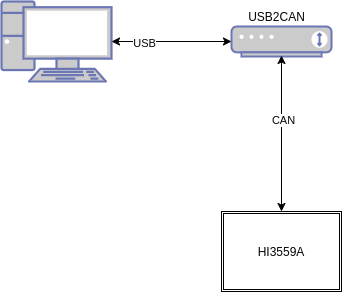

shuixia05-liteos-can_user
[TOC]
一、概述
之前在《CAN设备驱动测试使用说明-liteos》文档中初步说明了can驱动的编写，并且提供了一个demo实例，该实例初步实现了CAN口的收发，但是在大部分应用中，不能实现简单的收发，在发送的过程中，驱动实现了一个长度为16x8的数据fifo，能够满足大部分的应用，但是在接收中没有做任何处理，因此该部分不能直接在应用层中使用，本文件就can设备的进一步使用做一些说明。
二、 参考文件
GPIO复用功能描述文件《Hi3559A V100_PINOUT_EN.xlsx》
驱动操作使用指南《外围设备驱动 操作指南.pdf》
寄存器相关操作《Hi3559A╱C V100 ultra-HD Mobile Camera SoC 用户指南.pdf》
can驱动使用说明《CAN设备驱动测试使用说明-liteos》
三、驱动编译
1.hal_can.c/hal_can.h
参考《CAN设备驱动测试使用说明-liteos》
2.user_can.c/user_can.h
在hal_can.c/hal_can.h的基础上新建立一个线程，在CAN接口的接收中断中唤醒该线程，线程读取数据，并且在线程中对接收的CAN数据进行解析，解析之后做出处理。
在hal_can.h中添加如下代码：
extern EVENT_CB_S can_wait_event;
#define can_event_signal(event, bit) LOS_EventWrite(event, bit)
#define can_event_wait(event, bit, timeout) LOS_EventRead(event, bit,\
LOS_WAITMODE_AND + LOS_WAITMODE_CLR, timeout)
在hal_can.c中添加如下代码：
irqreturn_t can_isr(int a, void *arg){
...
if(reg & 0x10){
...
can_event_signal(&can_wait_event,canid == 0 ? 0x01 : 0x10);
}
else if(reg & 0x08){ //txok
...
}
else if((reg & 0x07 != 0) && (reg & 0x07 != 7)){
...
}
return IRQ_HANDLED;
}
static void can_start(int canid, uint32_t bandrate){
...
#if CANIR_EN
...
LOS_EventInit(&can_wait_event); //event初始化
#endif
...
}
修改user_can.c
#include "user_can.h"
pthread_mutex_t mutex_can;
static void *can_readmsg(void *arg)
{
uint8_t len, i, send_len;
uint16_t recv_flag;
uint8_t rx_buff[8];
uint8_t tx_buff[8];
uint32_t recv_id, send_id;
pthread_mutex_init(&mutex_can, NULL);//todo
while(1){
can_event_wait(&can_wait_event, 0x01, 0xFFFFFFFF); //等待中断唤醒,一直等待
recv_flag = hal_can_receive(1);
for(i = 0; i < 16;i ++){
if(recv_flag & 0x01){
len = hal_can_readmsg(1, &recv_id, rx_buff, i + 17);
pthread_mutex_lock(&mutex_can);
memcpy(tx_buff, rx_buff, 8);
send_id = recv_id;
send_len = len;
pthread_mutex_unlock(&mutex_can);
hal_can_transmit(1,send_id, tx_buff, len);
}
recv_flag >>= 1;
}
}
}
uint8_t tx_buff[8],rx_buff[8];
void user_can_initial(void){
uint16_t recv_flag,i,len;
uint32_t recv_id,ret = 0;
pthread_t id;
hal_can_initial(1,500000);
pthread_attr_t use_attr;
use_attr.inheritsched = PTHREAD_EXPLICIT_SCHED;
use_attr.detachstate = PTHREAD_CREATE_DETACHED;
ret = pthread_create(&id, &use_attr, can_readmsg, NULL);
if (ret) {
dprintf("can read thread create failed!\n");
}
}
四、API说明
hal部分：参考《CAN设备驱动测试使用说明-liteos》
user部分
/******************************************************************************
函数功能：can用户实用程序的初始化
初始化了can0设备以及can1设备，其中为can1设备创建了一个接收线程(can0引脚与uart0复用了)
输入参数：
void
输出参数：
void
******************************************************************************/
void user_can_initial(void);
/******************************************************************************
函数功能：can1的接收线程入口函数
输入参数：
void
输出参数：
void
******************************************************************************/
static void *can_readmsg(void *arg);
五、使用说明
将上述代码拷贝到SDK目录下，其具体路径为：osdrv/platform/liteos_a53/liteos/sample/sample_osdrv，对程序进行编译，make之后便可以得到可执行文件，将该文件烧写到板卡上便可以执行，其测试步骤如上图所示：电脑连接一个USB转CAN的设备，使用上位机给HI3559A发送CAN数据帧，HI3559A接收到CAN数据帧后便可以反馈其数据包，形成闭环。

六、注意事项
- 使用CAN设备之前必须先配置IO复用功能。
- CAN0与uart0复用功能，需要谨慎使用。
- 官方的板卡上存在sleep引脚，需要配置该引脚。
- 官方的板卡上有拨码开关，需要配置对应的拨码开关选择GPIO功能。